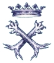

sito di propriet� della Associazione Culturale Zivido
webmaster pierino@snet.it
|  |
Casata dei marchesi |
i personaggi nella
storia
Don Annibale Francesco Ippolito Brivio Sforza
Marchese di Santa Maria in Prato, patrizio milanese, signore di Casal Majocco, Roncoli, Sordio e Isola Balba, ing. civile, capitano di complemento del genio, decorato della croce di guerra e delle campagne 1916-17-18, cavaliere d’onore e devoto del S.M.O. di Malta, cavaliere di giustizia del S.M.O. Costant. di S. Giorgio, cavaliere dei SS. Maurizio e Lazzaro, Comm. Corona d’Italia e cavaliere uff. St. Colon. comm. dell’ordine di Leopoldo II, gentiluomo di corte di S.M. la Regina Maria, presidente della Societ� Storica Lombarda e del Corpo della Nobilt� Italiana, nato a Milano il 3 luglio 1892, figlio del marchese don Giacomo (nato a Milano il 27 giugno 1819 + ivi 20 aprile 1901) e della di lui seconda moglie marchesa Angela nata Clerici (nata il 26 dicembre 1851, sposata 21 ottobre 1886, + 25 giugno 1917), sposa il 23 maggio 1917 donna Marianna Trivulzio, dama d’onore e devota del S.M.O. di Malta, dama di giustizia del S.M. Costant. di S.Giorgio, dama di corte di S.M. la Regina Maria, figlia del principe don Luigi Alberico Trivulzio (nata a Bellagio il 27 settembre 1895) – (Milano: via Olmetto 17, palazzo Belgiojoso, piazza Belgiojioso 2). |
da "Libro d'oro della nobilt� italiana", ed. XV, Vol. XVI, 1969-1972, Roma Collegio Araldico (Istituto Araldico Romano)
sito di propriet� della Associazione Culturale Zivido
webmaster pierino@snet.it